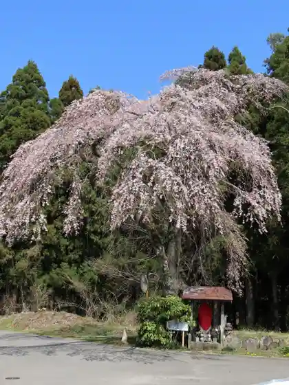
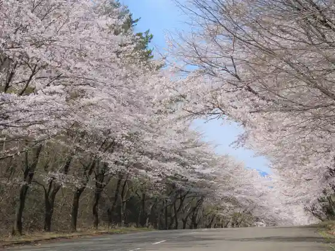
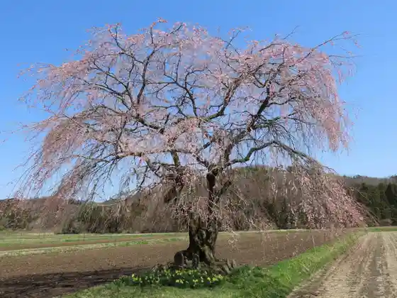
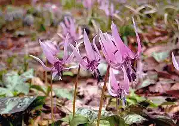

Horikawa Dam
Nishigo, Fukushima · 0248-25-5795 · Official / source link
En Kiji Kura no Shidare Sakura
Nishigo, Fukushima · 0248-25-5795 · Official / source link

Daijo Chiku no Sakura Namiki
Nishigo, Fukushima · 0248-25-5795 · Official / source link

Nishigo Takasuke Chiku no Shidare Sakura
Nishigo, Fukushima · 0248-25-5795 · Official / source link

Koshi Chiku no Katakuri
Nishigo, Fukushima · 0248-25-5795 · Official / source link

Nasu Shirakawa Foresutosupuringusu
Nishigo, Fukushima · 0248-25-3535 · Official / source link
Yukiwari Hashi
Nishigo, Fukushima · 0248-25-5795 · Official / source link
Rakuo Kei
Nishigo, Fukushima · 0248-25-5795 · Official / source link
Shinko Ko Promenade
Nishigo, Fukushima · 0248-25-5795 · Official / source link
Nishigo Folk History Museum
Nishigo, Fukushima · 0248-25-2371 · Official / source link
Horikawa Shinsui Park Cherry Blossoms
Nishigo, Fukushima · 0248-25-5795 · Official / source link
Koshi Bridge
Nishigo, Fukushima · 0248-25-5795 · Official / source link
Kochiyama no Tsutsuji
Nishigo, Fukushima · 0248-25-5795 · Official / source link
Shinko Ko Onsen
Nishigo, Fukushima · 0248-25-5795 · Official / source link
Koshi Onsen
Nishigo, Fukushima · 0248-25-5795 · Official / source link
Masutsuri Park (Hayashi ’ Yogyojo)
Nishigo, Fukushima · 0248-25-2041 · Official / source link
Shirakawa Koshi Highlands
Nishigo, Fukushima · 0248-25-5795 · Official / source link
Sekimen Yama
Nishigo, Fukushima · 0248-25-5795 · Official / source link
Nishi no Sato Promenade
Nishigo, Fukushima · 0248-25-5795 · Official / source link
Nikko National Park Shirakawa Koshi Highlands
Nishigo, Fukushima · 0248-25-5795 · Official / source link
Nasu Gongen Kazuyuki Torii
Nishigo, Fukushima · 0248-25-2371 · Official / source link
Tadogajusui Basho Jisei Chi
Nishigo, Fukushima · 0248-25-2371 · Official / source link
Kabuto Shrine no Kyaraboku
Nishigo, Fukushima · 0248-25-2371 · Official / source link
Tsurugi Katsura
Nishigo, Fukushima · 0248-25-5795 · Official / source link